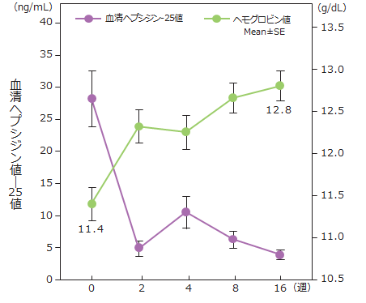
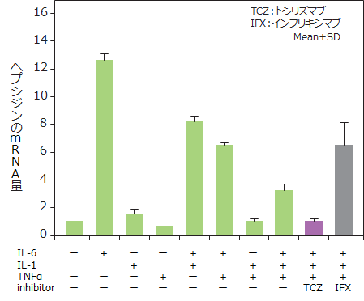

アクテムラはヘプシジンの産生抑制により、Hb値を上昇させる作用がある
血清ヘプシジン-25値及びHb値の推移
アクテムラ投与16週後にはヘプシジン値は低下し、Hb値上昇している

ヘプシジンのmRNA量（in vitro）
ヘプシジンのmRNA量は、ヘプシジン産生の主要な誘導因子であるIL-6により増加し、トシリズマブで抑制された（IFXではそのような効果はない）

ヘプシジン：肝臓で産生される鉄代謝ホルモン。リウマチなどの慢性炎症ではIL-6に反応し産生され、マクロファージからの鉄の放出と腸管からの鉄の吸収を同時に抑制
アクテムラの貧血改善効果が、倦怠感等の改善からQOL向上に寄与していると考えられる